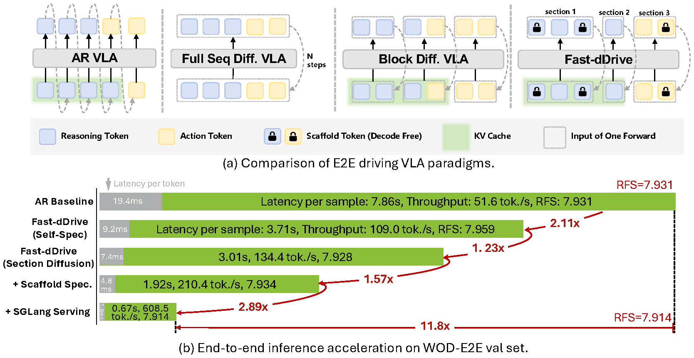
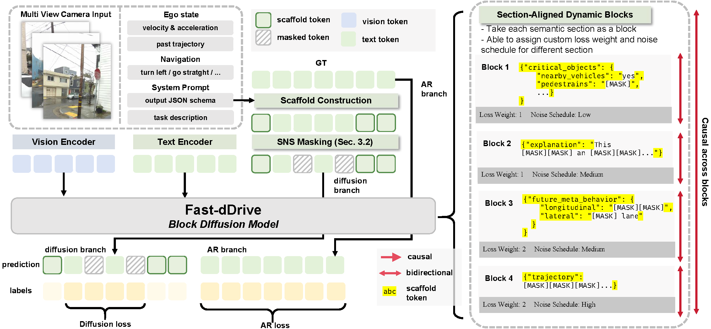
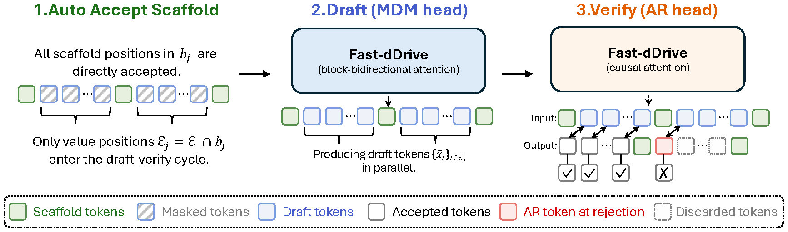
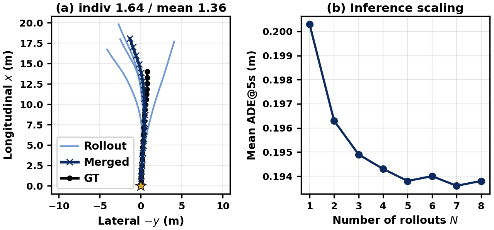

Kewei Zhang1*,
Jin Wang3,2*,
Sensen Gao2,
Chengyue Wu3,2,
Yulong Cao2,
Songyang Han2,
Boris Ivanovic2,
Langechuan Liu2,
Marco Pavone2,
Song Han4,2,
Daquan Zhou1†,
Enze Xie2†
1Peking University 2NVIDIA
3The University of Hong Kong 4MIT
*Equal contribution †Co-lead
End-to-end autonomous driving via Vision-Language-Action (VLA) models demands a precarious balance between high-fidelity trajectory planning and efficient inference. Existing paradigms typically fall short: autoregressive (AR) VLAs are memory-bandwidth-bound on edge hardware and prone to exposure-bias drift, while full-sequence diffusion models preclude KV-cache reuse and suffer from "logical leakage" that violates the fundamental perceive-then-plan causality.
We present Fast-dDrive, a block-diffusion VLA that performs bidirectional refinement within semantic units while enforcing strict causal ordering across them. Leveraging the observation that driving VLAs often emit structured JSON-like outputs, Fast-dDrive freezes structural tokens into a section scaffold and employs a section-aware training recipe (SASD) that prioritizes safety-critical planning. We further introduce Scaffold Speculative Decoding to achieve AR-equivalent quality at significantly higher throughput. Finally, we propose a low-overhead test-time scaling scheme: by forking N stochastic trajectory rollouts from a single shared-prefix KV cache and averaging them, we effectively suppress prediction variance at a fractional computational cost.
Empirical results demonstrate that Fast-dDrive redefines the speed-accuracy frontier for driving agents. On the WOD-E2E test set, Fast-dDrive achieves SOTA ADE@3s and ADE@5s, alongside the highest RFS among diffusion-based VLAs. On nuScenes, it reduces average L2 error to 0.32 m (a 22% improvement over prior diffusion baselines). When integrated with SGLang, our framework delivers 12× throughput speedup over the AR baseline, narrowing the gap between high-capacity VLAs and the efficiency demands of real-time on-vehicle deployment.

Fast-dDrive combines four innovations that together exploit the structured nature of driving VLA outputs:
•
Section Diffusion (SD):
Replace fixed-size block boundaries with semantically aligned sections (critical_objects, future_meta_behavior, explanation, trajectory). JSON structural tokens are pre-filled as a frozen scaffold; only value tokens are denoised.
• SASD — Section-Aware Structured Diffusion: Per-section importance-weighted loss (trajectory×3, FMB×2, critical_objects×1.5, explanation×1) plus section-adaptive Beta noise schedules. Pure training-time technique with zero inference overhead.
• Scaffold Speculative Decoding: Per block, MDM block-bidirectional draft + AR causal verify. Scaffold positions are auto-accepted. Matches Deep Scaffold quality at 64% faster latency — the fastest single-run inference mode.
• Test-Time Inference Scaling: Run scaffold spec for the shared CoT prefix once, then fork N stochastic trajectory rollouts from the same KV cache and average. Variance reduction at low marginal cost.

Existing VLAs fall into two camps: autoregressive models (Poutine, AutoVLA) have strong reasoning but are sequential and memory-bandwidth-bound at batch-size-1; full-sequence diffusion models (dVLM-AD) gain bidirectional context but suffer from slow iterative denoising and no KV-cache reuse. Fast-dDrive picks the block diffusion middle path: bidirectional refinement within a semantic section, strict causal ordering across sections, plus the ability to do speculative verification with the AR head it inherits from its Qwen2.5-VL backbone.

Fast-dDrive achieves the best ADE@3s and ADE@5s among all reported methods on the Waymo Open End-to-End Driving test set, while running at 210.4 TPS on a single H100 GPU — over 4× the throughput of the strongest AR baselines (Poutine/AutoVLA). Adding inference scaling (N=4 shared-prefix multi-rollout) further improves both ADE metrics with only a 1.8× cost factor.
| Method | Paradigm | RFS ↑ | ADE 5s ↓ | ADE 3s ↓ | TPS ↑ | Tok/Step ↑ |
|---|---|---|---|---|---|---|
| Autoregressive VLAs | ||||||
| OpenEMMA* | AR | 5.158 | 12.476 | 6.684 | — | 1 |
| LightEMMA* | AR | 6.517 | 3.740 | 1.705 | — | 1 |
| NaiveEMMA | AR | 7.528 | 3.018 | 1.320 | — | 1 |
| AutoVLA | AR | 7.557 | 2.958 | 1.351 | 51.2 | 1 |
| Poutine-Base | AR | 7.909 | 2.940 | 1.270 | 51.2 | 1 |
| Diffusion VLAs | ||||||
| dVLM-AD | Diffusion | 7.633 | 3.022 | 1.285 | 35.2 | 2.82 |
| Fast-dDrive (Scaffold Spec) | Block Diff. | 7.823 | 2.907 | 1.254 | 210.4 | 4.90 |
| + Inference scaling (N=4) | Block Diff. | 7.827 | 2.821 | 1.240 | 114.7 | 2.76 |
*: zero-shot. blue bold = best, light blue underline = 2nd best. TPS measured on a single H100.
Fast-dDrive's scaffold speculative decoding shrinks per-sample latency from 7855 ms (AR baseline) to 1919 ms on a single H100, a 4.1× wall-clock speedup at parity or better accuracy. Plugging in SGLang's optimized kernels with FP8 quantization pushes the speedup to 11.8×, hitting 608 TPS.
| Method | Decoding | Latency (ms) ↓ | TPS ↑ | Tok/Step ↑ | ADE 5s ↓ | RFS ↑ |
|---|---|---|---|---|---|---|
| AR Baseline (Qwen2.5-VL-3B) | Autoregressive | 7855 | 51.6 | 1 | 2.083 | 7.931 |
| dVLM-AD (Full-seq MDM) | Iterative Denoise | 9575 (0.8×) | 35.2 | 2.82 | 3.024 | 7.187 |
| Fast-dDrive (Self-Spec) | Draft+Verify | 3714 (2.1×) | 109.0 | 2.41 | 1.973 | 7.959 |
| Fast-dDrive (Section Diffusion) | Iterative MDM | 3006 (2.6×) | 134.4 | 3.28 | 2.058 | 7.928 |
| + Scaffold Spec | Scaffold + D&V | 1919 (4.1×) | 210.4 | 4.90 | 1.982 | 7.934 |
| + SGLang serving | Scaffold + D&V | 665 (11.8×) | 608.5 | 4.93 | 1.995 | 7.914 |
Fast-dDrive transfers strongly to the nuScenes benchmark, reducing L2 prediction error to 0.32 m on average — outperforming both classical training-based policies (UniAD, VAD, BEV-Planner) and recent reasoning-based VLAs (DriveVLM, AutoVLA, dVLM-AD). This is a 22% relative improvement over the best prior reasoning-based result.
| Method | L2 @1s ↓ | L2 @2s ↓ | L2 @3s ↓ | Avg ↓ |
|---|---|---|---|---|
| Training-based Policy | ||||
| UniAD | 0.20 | 0.42 | 0.75 | 0.46 |
| VAD-Base | 0.17 | 0.34 | 0.60 | 0.37 |
| BEV-Planner | 0.16 | 0.32 | 0.57 | 0.35 |
| VLMs / VLAs with Reasoning | ||||
| OpenEMMA* | 1.45 | 3.21 | 3.76 | 2.81 |
| DriveVLM | 0.18 | 0.34 | 0.68 | 0.40 |
| AutoVLA | 0.25 | 0.46 | 0.73 | 0.48 |
| dVLM-AD | 0.15 | 0.40 | 0.68 | 0.41 |
| Fast-dDrive (ours) | 0.12 | 0.33 | 0.50 | 0.32 |
Single-mode multi-sampling (temperature perturbation) collapses to one answer because the AR verify head is deterministic.
We instead generate N stochastic trajectory rollouts from a shared scaffold-spec prefix, applying non-zero verify temperature only on the trajectory section, and averaging waypoints.
The first three sections (critical_objects, explanation, future_meta_behavior) are heavily structured by the schema, so we keep the AR verifier greedy there and only enable sampling once decoding enters the trajectory section.
On a representative WOD-E2E val sample, the N=4 rollouts disagree most at the late waypoints, while their mean lies right on top of the ground truth; ADE@5s decreases monotonically with N, confirming the variance-of-the-mean argument.

@misc{zhang2026fastddriveefficientblockdiffusionvlm,
title={Fast-dDrive: Efficient Block-Diffusion VLM for Autonomous Driving},
author={Kewei Zhang and Jin Wang and Sensen Gao and Chengyue Wu and Yulong Cao and Songyang Han and Boris Ivanovic and Langechuan Liu and Marco Pavone and Song Han and Daquan Zhou and Enze Xie},
year={2026},
eprint={2605.23163},
archivePrefix={arXiv},
primaryClass={cs.CV},
url={https://arxiv.org/abs/2605.23163},
}